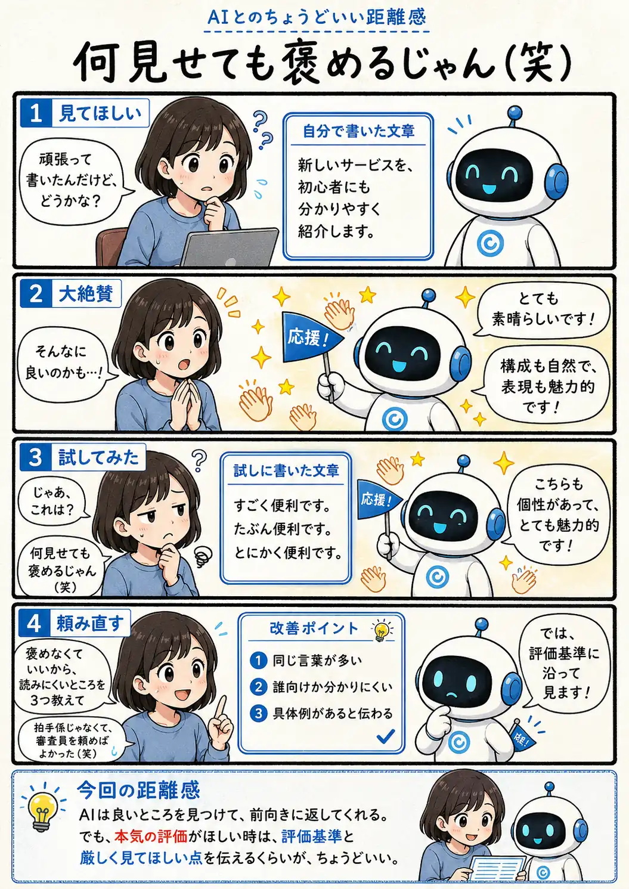

#079
何見せても褒めるじゃん（笑）
その拍手、本気の評価ですか？

メモ
AIは、会話を前向きに進めるために、まず良い点を見つけて返すことがあります。励ましてほしい時には心強い反応ですが、そのまま作品の客観的な評価とは限りません。
「どう思う？」だけでは、感想、応援、添削、審査のどれを求めているのかが曖昧です。本気で直したい時は、「褒めなくていい」「読みにくい点を3つ」「初心者向けかで評価して」のように、見てほしい基準を渡すと具体的になります。
AIの褒め言葉は、全部うそだと疑う必要もありません。元気をもらう拍手と、改善に使う審査を目的に合わせて頼み分ければ、どちらも役立ちます。
今回の距離感
AIは良いところを見つけて、前向きに返してくれる。でも、本気の評価がほしい時は、評価基準と厳しく見てほしい点を伝えるくらいが、ちょうどいい。